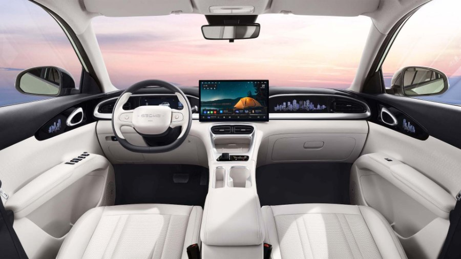

Review Geely EX2: Mobil Listrik Kompak untuk Pemakaian Harian

Geely EX2 adalah mobil listrik kompak yang menyasar pemakaian harian di kota. Ulasan ini disusun dari data resmi brosur Geely Indonesia dan pertanyaan yang paling sering diajukan calon pemilik, jadi bukan klaim hasil uji yang tidak bisa dibuktikan. Untuk rasa berkendara yang sebenarnya, tetap cobalah langsung lewat test drive.
Sekilas Geely EX2
Ukurannya 4.135 mm x 1.805 mm x 1.580 mm dengan jarak sumbu roda 2.650 mm. Kapasitas penumpang lima orang. Penggeraknya roda belakang (RWD) dengan motor listrik magnet permanen berdaya maksimum 85 kW dan torsi 150 Nm. Baterai lithium iron phosphate (LFP) berkapasitas 40,8 kWh dengan jarak tempuh gabungan NEDC 395 km.
Ada dua varian, yaitu Pro dan Max. Perbedaannya dibahas lengkap di artikel perbedaan EX2 Pro dan Max.
Yang menarik dari EX2
- Ukuran kota yang praktis. Panjang 4,1 meter membuat mobil ini mudah diparkir dan lincah di jalan padat.
- Bagasi depan 70 liter. Selain bagasi belakang 375 liter, ada ruang tambahan di depan untuk kabel pengisi daya atau barang kecil.
- Konsumsi energi rendah. Angka NEDC 11,8 kWh per 100 km tergolong hemat, cara menghitungnya ada di efisiensi mobil listrik.
- Fitur modern. Layar infotainment 14,6 inci, panel instrumen 8,8 inci, dan V2L di kedua varian.
- Keselamatan. Airbag depan dan samping depan, serta ADAS level 2 dengan 12 fungsi pada varian Max.
Hal yang perlu dipertimbangkan
- Tenaga cukup, bukan sporty. Akselerasi 0-100 km/jam 11,5 detik. Nyaman untuk kota dan jalan tol, tetapi bukan mobil yang mengejar sensasi.
- Kecepatan maksimum 130 km/jam. Cukup untuk batas jalan di Indonesia.
- Ruang kabin untuk lima orang terasa pas, bukan lega seperti SUV besar. Jika keluargamu sering membawa banyak barang, bandingkan dengan kakaknya di EX2 vs EX5.
- Pengisian daya di rumah butuh perencanaan daya listrik. Panduannya ada di cara mengisi daya EX2.
Siapa yang cocok
EX2 cocok untuk pengguna yang sebagian besar berkendara di dalam kota dan sekitarnya, punya tempat parkir yang bisa dipasangi charger, dan ingin menekan biaya bahan bakar. Pasangan muda, keluarga kecil, dan pekerja komuter adalah gambaran pemakai yang paling sesuai.
Kurang cocok jika kamu hampir tidak punya akses mengisi daya, sering menempuh jarak antarkota yang sangat jauh tiap pekan, atau butuh ruang kabin dan bagasi yang besar.
Rasa berkendara: apa yang diperhatikan saat test drive
- Respons pedal gas saat berangkat dari lampu merah.
- Seberapa halus mode Eco, Comfort, dan Sport berubah.
- Kenyamanan suspensi di jalan rusak dan polisi tidur. Depan memakai McPherson, belakang multi-link.
- Kebisingan jalan pada kecepatan tol.
- Posisi duduk dan visibilitas, terutama di parkiran sempit.
Kesimpulan
Geely EX2 adalah pilihan masuk akal untuk kamu yang ingin mobil listrik berukuran kompak dengan fitur lengkap. Kekuatannya ada di efisiensi, ukuran praktis, dan perlengkapan modern. Kelemahan yang wajar adalah ruang yang terbatas dibanding SUV besar dan kebutuhan fasilitas pengisian daya.
Spesifikasi dalam artikel ini mengikuti brosur resmi Geely Indonesia dan dapat berubah tanpa pemberitahuan. Ingin mencoba langsung? Baca test drive EX2 di BSD City dan Tanah Abang lalu hubungi kami lewat WhatsApp.
Pertanyaan yang paling sering ditanyakan calon pemilik
Dari obrolan dengan calon pembeli, tiga pertanyaan yang paling sering muncul adalah soal jarak tempuh nyata, cara mengisi daya di rumah, dan perbedaan varian. Jawabannya ada di jarak tempuh nyata EX2, cara mengisi daya EX2, dan perbedaan EX2 Pro dan Max. Jika kamu baru pertama kali melirik mobil listrik, mulailah dari panduan pemula membeli mobil listrik.
Ringkasan cepat
- Kompak, mudah parkir, dan hemat energi.
- Jarak tempuh resmi 395 km NEDC dengan baterai LFP 40,8 kWh.
- Dua varian: Pro untuk kebutuhan dasar, Max untuk fitur keselamatan dan kenyamanan lebih lengkap.
- Cocok untuk pemakaian harian di kota, kurang ideal jika butuh ruang besar.
Tanya jawab
Apakah Geely EX2 cocok untuk dipakai harian di Jakarta?
Cocok. Ukurannya ringkas, mudah diparkir, dan konsumsi energinya rendah untuk pemakaian dalam kota. Pastikan kamu punya tempat mengisi daya yang praktis di rumah atau kantor.
Berapa jarak tempuh Geely EX2?
Angka resmi NEDC adalah 395 km sekali isi penuh. Pemakaian nyata biasanya lebih rendah tergantung gaya berkendara, AC, dan kondisi jalan.
Apa saja varian Geely EX2?
Ada dua varian, Pro dan Max. Max memiliki fitur tambahan seperti ADAS level 2, kamera 360 derajat, velg alloy 16 inci, dan jok pengemudi elektrik.